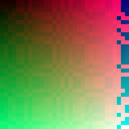
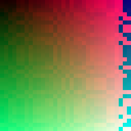
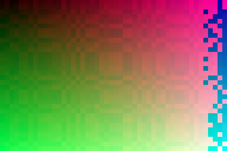

js-not-run
This page pulls one stylesheet, one script, and four PNG images, so a single load opens multiple connections to the fixture server and exercises CSS parse, image decode, and script execution.
The images are deterministic gradients-plus-noise generated by gen_images.py; they do not compress to nothing, so the transfer is real.




fixture=medium